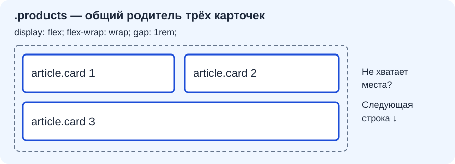
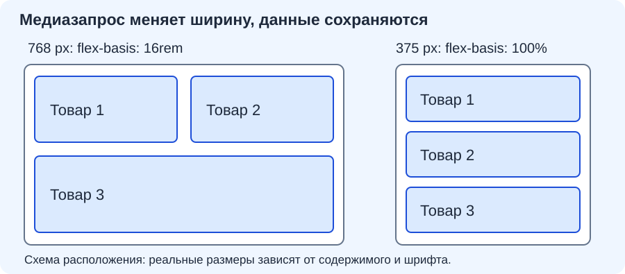

Адаптация интерфейса к узкому экрану и проверка в браузере
Индивидуальные задания
- Вариант 01
- Вариант 02
- Вариант 03
- Вариант 04
- Вариант 05
- Вариант 06
- Вариант 07
- Вариант 08
- Вариант 09
- Вариант 10
- Вариант 11
- Вариант 12
- Вариант 13
- Вариант 14
- Вариант 15
- Вариант 16
- Вариант 17
- Вариант 18
- Вариант 19
- Вариант 20
- Вариант 21
- Вариант 22
- Вариант 23
- Вариант 24
- Вариант 25
- Вариант 26
- Вариант 27
- Вариант 28
- Вариант 29
- Вариант 30
- Вариант 31
- Вариант 32
- Вариант 33
- Вариант 34
- Вариант 35
- Вариант 36
- Вариант 37
- Вариант 38
- Вариант 39
Продолжаем свою папку VariantNN-web: главную, каталог и форму. На этой практике применим Flexbox, добавим настройку мобильного просмотра и проверим страницы при трёх значениях ширины. Тексты, товары, картинки, цвета и ограничения формы сохраняются.
Текущий набор индивидуальных заданий задаёт содержание вашего проекта. Вариант 00 содержит данные преподавателя и ожидаемый результат.
| Шаг | Что сделать | Как проверить |
|---|---|---|
| 1 | Открыть три страницы и проверить основу | Меню и общий CSS работают |
| 2 | Добавить viewport | Строка есть в каждом head |
| 3 | Расположить карточки и меню через Flexbox | Карточки переносятся, ссылки помещаются |
| 4 | Добавить правило узкого экрана | До 600 px карточки стоят по одной |
| 5 | Проверить 320, 375 и 768 px | Все три страницы читаются и работают |
Работайте небольшими изменениями: сохраните файл → обновите страницу → посмотрите результат. Новую папку проекта создавать не нужно.
Какой результат должен получиться
Ниже — каталог преподавательского варианта 00 после адаптации. На широком экране две карточки стоят рядом, третья занимает следующую строку; на узком — все три идут по одной. Содержимое и порядок товаров одинаковые.
Каталог — ширина 768 px

Тот же каталог — ширина 375 px

Свой проект сравнивайте с разделом «Результат» своего индивидуального листа: там показаны именно ваши тексты, изображения, цвета и поля. Вариант 00 также содержит образцы главной и формы на узком экране.
Это наглядные учебные образцы, не снимки браузера. Проверяйте расположение, данные, читаемость и отсутствие выхода за край, а не совпадение пикселей. Вид элементов формы может различаться. Картинки не заменяют HTML-страницы и не подтверждают работу переходов и отправки формы.
1. Проверьте исходный проект
Откройте index.html, затем по меню перейдите в catalog.html и form.html. На каждой странице в меню должны быть две ссылки на другие страницы, без ссылки на открытую страницу.
Внутри head каждого HTML-файла проверьте:
<link rel="stylesheet" href="style.css">
У основной части должен быть класс page, у трёх карточек каталога — card. Форма сохраняет класс request-form, а абзацы списка, количества, комментария и ползунка — form-field. Это основа из практики оформления. Если чего-то не хватает, восстановите нужный шаг, затем продолжайте здесь.
В style.css найдите существующие правила и убедитесь, что в них есть:
* {
box-sizing: border-box;
}
img {
max-width: 100%;
height: auto;
}
Не добавляйте вторые копии уже имеющихся правил. Сохраните прежние цвета, рамки, отступы, оформление полей и видимый фокус клавиатуры.
Самопроверка: открываются три страницы, в каталоге три товара, в форме все шесть элементов. Пока карточки могут стоять сверху вниз.
2. Настройте мобильный просмотр
В каждом из трёх HTML-файлов внутри head, сразу после строки meta charset, добавьте:
<meta name="viewport" content="width=device-width, initial-scale=1">
Если такая настройка уже есть, второй тег не нужен.
Viewport — область просмотра страницы. width=device-width просит мобильный браузер использовать ширину устройства в CSS-пикселях, initial-scale=1 задаёт начальный масштаб. Эта строка не меняет расположение карточек и не запрещает человеку увеличивать страницу.
Самопроверка: найдите name="viewport" во всех трёх файлах. В каждом должна быть одна такая строка между head и /head.
3. Дайте карточкам общего родителя
В catalog.html найдите три существующих article. Добавьте перед первым открывающий тег, а после закрывающего тега третьего — закрывающий:
<div class="products">
<!-- Здесь остаются три ваших article class="card" целиком -->
</div>
Строка с <!-- ... --> показывает место существующего содержимого. Не заменяйте ею товары и не создавайте повторные карточки. Заголовок каталога, пояснение и меню оставьте снаружи products.

В style.css после обычных правил карточек добавьте:
.products {
display: flex;
flex-wrap: wrap;
gap: 1rem;
}
.products > .card {
flex: 1 1 16rem;
min-width: 0;
margin-bottom: 0;
}
| Запись | Что происходит |
|---|---|
display: flex |
Родитель управляет расположением непосредственных детей |
flex-wrap: wrap |
Карточки могут переходить на следующую строку |
gap: 1rem |
Между карточками появляется промежуток |
flex: 1 1 16rem |
Начальная ширина — 16rem; карточка может расти и сжиматься |
min-width: 0 |
Длинное содержимое не навязывает карточке минимальную ширину |
margin-bottom: 0 |
Старый нижний отступ карточки заменяется общим gap |
В обычном направлении текста Flexbox по умолчанию располагает детей в строку. Когда ширины не хватает, wrap переносит карточку ниже. Последняя карточка может занять всю свободную строку — это ожидаемо при разрешённом росте.
Самопроверка: сузьте и расширьте окно. Меняется число карточек в строке, но порядок товаров и содержимое остаются прежними.
4. Разрешите меню переноситься
В общий style.css добавьте правило контейнера меню:
nav {
display: flex;
flex-wrap: wrap;
gap: 0.5rem;
}
В существующем правиле nav a замените прежний внешний отступ на margin: 0;: теперь промежутком управляет gap. Цвета и рамки ссылок оставьте.
Внутрь существующего body { ... } добавьте одну строку:
overflow-wrap: anywhere;
Она разрешает перенос очень длинного слова, когда иначе оно вышло бы за край. Обычные слова продолжают переноситься по пробелам. Для ссылок меню добавьте в существующее nav a:
max-width: 100%;
Самопроверка: на узком экране длинная подпись ссылки читается целиком; если обе ссылки рядом не помещаются, вторая переходит ниже. По-прежнему в меню только две ссылки.
5. Добавьте правило для узкого экрана
Медиазапрос применяет CSS только при заданном условии. В самом конце style.css, после обычных правил, добавьте:
@media (max-width: 600px) {
main.page {
padding: 0.75rem;
}
.products > .card {
flex-basis: 100%;
}
}
Здесь max-width: 600px означает «ширина области просмотра не больше 600 CSS-пикселей». При таком условии отступ основной части немного уменьшается, а начальная ширина карточки становится равной ширине контейнера: каждая карточка занимает свою строку. Выше 600 px снова действует начальная ширина 16rem.

600px — выбранная граница для этого учебного макета, а не перечень моделей телефонов. Значения 320, 375 и 768 ниже — ширины проверки в CSS-пикселях.
В существующих правилах формы проверьте ширину списка, числа и комментария. Дополните их:
.request-form select,
.request-form input[type="number"],
.request-form textarea {
width: 100%;
min-width: 0;
max-width: 100%;
}
Это дополнение к прежнему оформлению: рамки и внутренние отступы сохраняются. Ползунок сохраняет width: 100%, флажки — свой небольшой размер. Не задавайте ширину 100% всем input сразу.
Самопроверка: на узком экране карточки идут по одной, подписи формы видны, поля не выходят за рамку. На широкой странице карточки снова могут располагаться рядом.
6. Проверьте точную ширину в браузере
Проверяйте свои HTML-страницы проекта VariantNN-web в Chrome на компьютере. Для этого не нужен настоящий телефон: браузер умеет показывать страницу с заданной шириной.
- Сохраните HTML и CSS. Откройте свой
index.htmlв Chrome. - Нажмите F12, чтобы открыть инструменты разработчика. Если клавиша не срабатывает, используйте Ctrl + Shift + I.
- В верхней части панели разработчика нажмите кнопку с изображением телефона и планшета. Откроется панель проверки размеров над страницей.
- В списке устройств выберите Responsive — режим произвольного размера. Выбирать определённую модель телефона не требуется.
- Найдите два поля размеров, например 375 × 800. Первое число — ширина, второе — высота. Введите в первое поле 320 и нажмите Enter. Высоту можно оставить 800.
- При ширине 320 откройте по меню главную, каталог и форму. Затем замените первое число на 375, нажмите Enter и снова проверьте три страницы. Повторите с шириной 768.
Все три значения — 320, 375 и 768 CSS-пикселей — вводятся в одно и то же поле ширины. Поле высоты менять между проверками не нужно; прокрутка вниз допустима.
Меняется область просмотра страницы, а не размер текста. Не уменьшайте масштаб, чтобы скрыть проблему. Если панель не находится, попросите преподавателя показать её один раз на вашем компьютере.
При каждой ширине 320 → 375 → 768 откройте все три страницы, прокрутите каждую до конца и попробуйте переходы.
| Страница | Что проверить на каждой из трёх ширин |
|---|---|
| Главная | Заголовок, картинка и текст помещаются; обе ссылки меню и переходы работают |
| Каталог | Все три товара в прежнем порядке; картинки не растянуты; текст внутри рамок |
| Форма | Все шесть элементов видны; подписи читаются; флажки небольшие; кнопка помещается |
У всей страницы не должно быть горизонтальной прокрутки. Вертикальная прокрутка нормальна. При 320 и 375 px каталог показывает одну карточку в строке. При 768 px карточки могут стоять рядом; точное число зависит от оставшихся отступов и размера шрифта.
После проверки размеров на форме нажмите Tab несколько раз: фокус должен быть заметен. Попробуйте отправить форму без выбора товара; затем выберите товар, укажите допустимое количество и отправьте снова. Сначала браузер должен остановить отправку, затем показать параметры GET в адресе. Это учебная передача параметров: заказ не сохраняется и не обрабатывается.
Эмуляция помогает проверить вёрстку. Она не подтверждает работу на всех настоящих телефонах.
Если что-то выходит за край
| Наблюдение | Что проверить |
|---|---|
| Карточки не реагируют на Flexbox | products оборачивает именно три article; в CSS есть точка перед именем класса |
| Карточки не становятся отдельными строками на 375 px | Медиазапрос в конце CSS; фигурные скобки закрыты; ширина панели действительно 375 |
| Картинка шире карточки | Нет ли фиксированной ширины без max-width: 100% или фиксированной высоты |
| Форма выходит за рамку | Сохранены border-box, ширина нужных полей и отсутствие лишней фиксированной ширины |
| Длинная подпись меню обрезана | Сохранены перенос текста, перенос Flexbox и предел ширины ссылки |
| Ничего не изменилось | Файл сохранён; открыт нужный проект; CSS подключён; страницу обновили |
Исправляйте причину. Не добавляйте overflow-x: hidden всей странице: это может просто спрятать часть текста или поля.
Как сдать работу
Если ещё не получается включить проверку размеров, сначала выполните шаг 6 — настройку ширины в браузере.
До показа самостоятельно проверьте девять сочетаний: главную, каталог и форму при каждой ширине 320, 375 и 768 px. Если что-то выходит за край, исправьте это и повторите проверку.
При сдаче оставьте панель размеров открытой и покажите преподавателю:
- При ширине 375 — главную, каталог и форму своего варианта. Тексты и изображения сохранены, поля доступны, карточки каталога стоят по одной.
- При ширине 768 — каталог: при обычном шрифте две карточки рядом, третья ниже. Покажите, в каком поле меняете ширину; значение 320 тоже должно быть проверено до сдачи.
- Переход по меню — откройте другую страницу и вернитесь. На каждой странице в меню только две ссылки на остальные страницы.
- Форму — пройдите поля клавишей
Tab, чтобы был виден фокус. Отправьте с пустым выбором: браузер должен остановить отправку. Выберите позицию и укажите допустимые данные: при отправке параметры GET должны появиться в адресе. - Объяснение своими словами — какой контейнер управляет карточками и что меняется в медиазапросе.
Сдаётся работающий проект в вашей папке VariantNN-web. Картинки-образцы служат для сравнения; показывайте свои HTML-страницы. Отдельный письменный отчёт не нужен.
При сравнении с картинками своего варианта проверьте четыре признака:
| Что видно на экране | Признак готовности |
|---|---|
| Каталог на 768 px | При обычном размере шрифта две карточки рядом, третья ниже; порядок прежний |
| Каталог на 375 px | Одна карточка в строке, все три товара доступны прокруткой вниз |
| Главная на 375 px | Заголовок, изображение и обе ссылки читаются целиком |
| Форма на 375 px | Шесть элементов в своём порядке, подписи и кнопка внутри страницы |
На всех страницах нет общей горизонтальной прокрутки. Если шрифт увеличен пользователем, карточек в строке может быть меньше: это допустимо, пока данные доступны и читаемы.
Сохраните проект в своей папке. Отдельный письменный отчёт не нужен. Если осталось время, исправьте замеченные проблемы и повторите затронутую проверку.